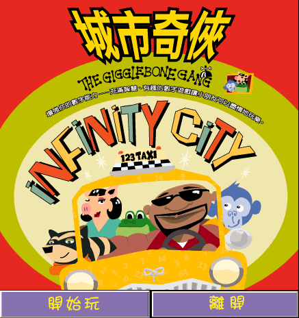
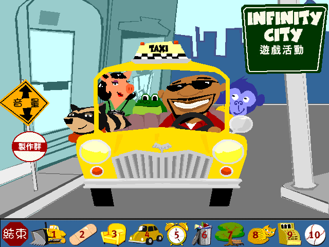
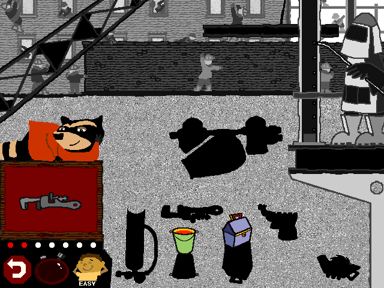

名稱：城市奇俠：騎哥幫五人組 (The Gigglebone Gang: Infinity City，中文版)
簡介：Headbone 1997年出品的學齡前幼兒教育遊戲，以數字、形狀、順序、配對等為主題，
由元尊文化中文化並代理發行 [待補]。



保護：無，直接在光碟上執行。
限制：遊戲程式為16位元，只能在Win31/9x/XP系統上執行。
說明：五位角色對應的活動：
1.猴子：一個簡短的動畫故事，引出一個謎題，玩家需要從中選擇正確的物品。
2.青蛙：一項沒有獲勝條件的創意活動。
3.獾：將螢幕上的給定物品與其他物品進行配對的遊戲。
4.小豬：一個關於數字一到十的圖片相關題目。
5.人類：一首配有動畫的歌曲。